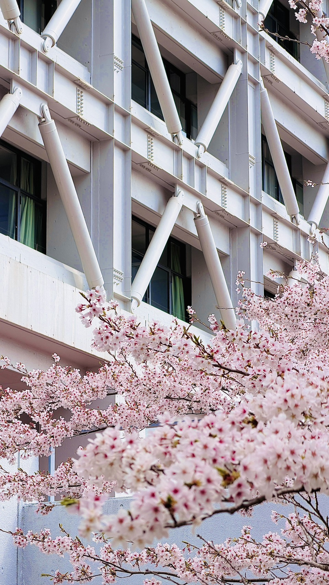

志雲会とは?

私たちは公認会計士受験団体です
創立
直近2年間合格者
とのつながり
実績
創立55年を超える伝統と、直近2年で2桁合格を誇る圧倒的な実績の詳細はこちらからご覧いただけます。
活動内容
仲間と切磋琢磨しながら公認会計士試験の現役合格を目指します。
先輩による手厚い学習サポートや、定期的な進捗確認があるため、初心者からでも安心して勉強に集中できる環境です。
また、試験後には懇親会などのイベントも行い、メリハリのある活動をしています。
専用研究室について
2024年より、多摩学生研究棟（炎の塔）1階に専用の固定席研究室を設置しています。
冷暖房完備で、大量の参考書や問題集を保管できる個人スペースも確保されており、24時間いつでも試験勉強に没頭できる最高峰の環境が整っています。
2026年度入会選考
志雲会では、2026年度の新入会員を募集しています。
「志は雲の如く高く」の理念のもと、本気で公認会計士を目指す熱意のある仲間を歓迎します。
選考日程や試験内容（面接）の詳細は、確定し次第こちらのスペースおよび各種SNS（Instagram等）にて告知いたします。

選考結果
2026年度の選考結果はこちらからご確認いただけます。

活動場所
中央大学 多摩キャンパス 多摩学生研究棟（炎の塔）1階 専用研究室
よくある質問
自習席は何席ありますか？
24席です！
簿記や会計の勉強が未経験でも大丈夫ですか？
はい、全く問題ありません！ 入会員のほとんどが簿記の知識ゼロからスタートします。 先輩たちが一から丁寧に勉強法を教えるほか、 炎の塔の優れた教材も揃っていますので安心してご入会ください。
会費のほかに教材費などの追加費用はかかりますか？
年間会費は5,000円です。これ以外に会から強制的な追加徴収をすることはありません。 ただし、公認会計士予備校の授業料やテキスト代等は自己負担となります。